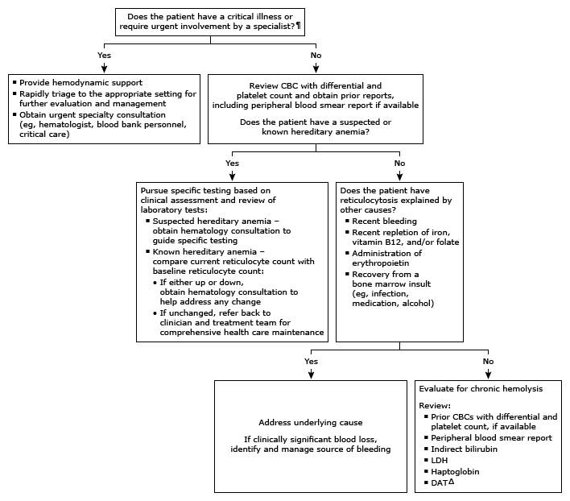

Initial evaluation of high reticulocytes in adults*

This algorithm is intended to be used with additional UpToDate content on hemolytic anemia.
CBC: complete blood count; LDH: lactic dehydrogenase; DAT: direct antiglobulin test; RBC: red blood cell; HGB: hemoglobin; HCT: hematocrit. * The reticulocyte count can be estimated from the peripheral blood smear, quantified from a manual count on a peripheral blood smear stained for reticulin, or by an automated counter. Reticulocytes can be expressed as a percentage of RBCs or as an absolute number. In an individual with a normal HGB, a normal reticulocyte percentage ranges from 0.5 to 2%. In an individual with anemia, the corrected reticulocyte percentage is the reticulocyte percentage times the patient's HCT/normal HCT. The normal absolute reticulocyte count is between 25,000 to 75,000/microL. Interpretation of a specific abnormal result should be based upon the reference range reported with that result. ¶ As examples:
Hemodynamic instability, active bleeding, brisk hemolysis
Suspected acute hemolytic transfusion reaction
Likely thrombotic microangiography
Intravascular hemolysis due to a serious disorder
HGB <7 g/dL (70 g/L) that cannot be raised by transfusion and/or symptomatic anemia associated with end-organ ischemia
Δ DAT (Coombs test) is ordered to differentiate immune hemolysis (positive DAT) from nonimmune hemolysis. Refer to additional UpToDate Laboratory Interpretation monograph on positive DAT.